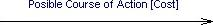
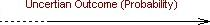
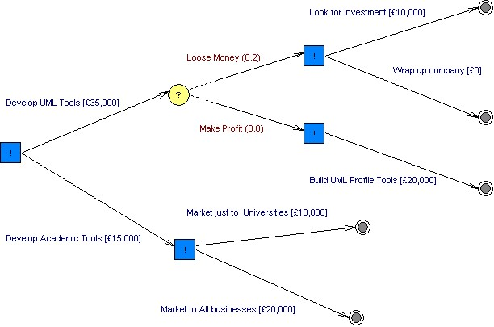

|
|
Decision Tree
A decision tree allows a user to identify a number of possible
courses of actions and the related costs. The tool allows the user to
see how one decision may lead onto future decisions and any
uncertainties that may exist. Once a decision tree has been completed a
number of paths can be easily identified as the courses of action that
may be taken in the future. Like many softer approaches decision trees
can be used in a variety of situations.
To view the main multi-CASE help page click
here
|
|
|
|

Possible Action
Definition: A possible action represents a point from which two or
more actions can be taken, each with an associated description and cost.
Representation: A possible action is represented by a square with a
"!" in the centre. By default a possible action is blue.

Creation: To add a possible course of action right click on an
existing possible action box or a terminator icon and select the "Add Possible
Course of Action" option from the menu. When a new diagram is created a possible
action box known as a start node is added automatically. You can add further
start nodes by right clicking on the diagram background and selecting the option
"Add New Start Node" from the menu produced.
Rules: There should always be at least two possible action pathways
coming from a possible action box.
Operations: Move Forward/Back, Bring to Front, Send to Back, Delete,
Add Possible Course Of Action, Change Color
Uncertain Outcome
Definition: An uncertain outcome represents a decision point that has
two or more possible (but as yet unknown) outcomes, each with an associated
description and level of probability.
Representation: An uncertain outcome is represented by a circle with a
"?" in the centre. By default a uncertain outcome is yellow.
Creation: To add an uncertain outcome right click on an existing
uncertain outcome circle or a terminator icon and select the option "Add
Uncertain Outcome" from the menu produced.
Rules: There should always be at least two uncertain outcome pathways
coming from an uncertain outcome circle.
Operations: Move Forward/Back, Bring to Front, Send to Back, Delete,
Add Uncertain Outcome, Change Color
Possible Action Pathway
Definition: This type of pathway represents an action/cost that is
associated with a possible action.
Representation: Possible action pathways are represented by a solid
arrow, with the course of action and cost of this action displayed textually.
The pathway extends from a possible action points to the next entity on the
decision tree.

Creation: When a possible course of action is created a possible
course of action pathway is added automatically. When prompted enter the
decision to be made and the cost of the decision and click "OK".
Rules: A possible course of action pathway should always be named and
where appropriate given a cost.
Operations: Move Forward/Back, Bring to Front, Send to Back,
Add/Remove Link Point, Change Color, Edit Link Details
Back To Top
Uncertain Outcome Pathway
Definition: This type of pathway represents an outcome
description/probability that is associated with an
uncertain outcome.
Representation: Uncertain outcome pathways are represented by a half
dotted, half solid arrow, with the uncertain outcome and probability of this
outcome displayed textually. The pathway extends from an uncertain outcome and
points to the next entity on the decision tree.

Creation: When an uncertain outcome is created an uncertain outcome
pathway is added automatically. When prompted enter a the outcome description
and its probability of occurring and click "OK".
Rules: An uncertain outcome pathway should always be named and where
appropriate given a probability.
Operations: Move Forward/Back, Bring to Front, Send to Back,
Add/Remove Link Point, Change Color, Edit Link Details
Back To Top
Terminator
Definition: A terminator represents the end of the decision making
process.
Representation: A terminator is represented by a solid circle with a
ring around it.
Creation: A terminator is created automatically at the end of a link
each time an action or a outcome is added.
Operations: Move Forward/Back, Bring to Front, Send to Back, Delete,
Add Possible Course Of Action, Add Uncertain Outcome, Change Color
Example
Below is an example of a Decision Tree diagram:
